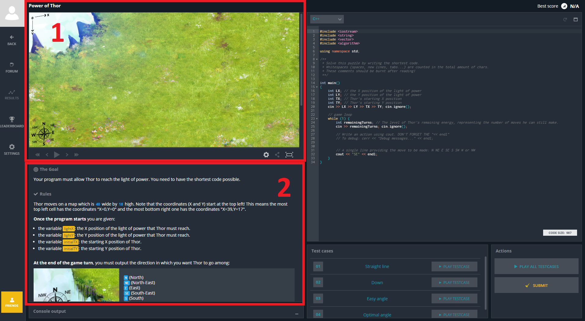
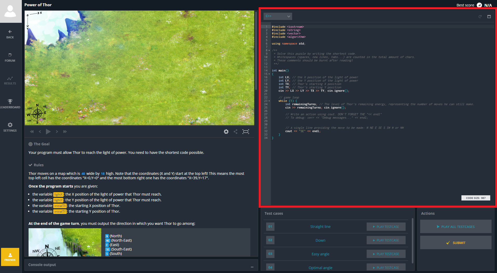
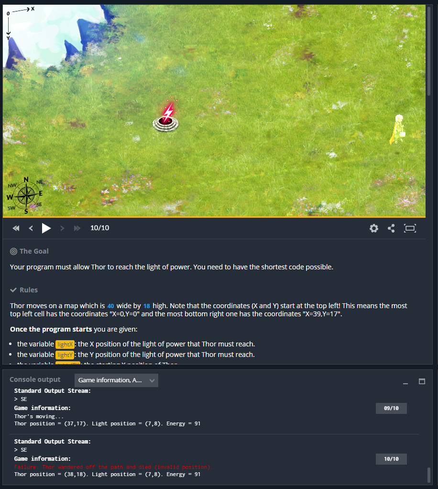
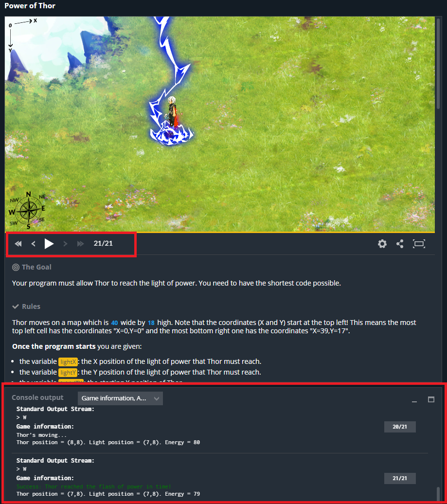

Lab 05 - CodinGame wstęp, IO
Lab 05 - CodinGame
Codingame
Codingame jest platformą online, która umożliwia rozwiązywanie zadań programistycznych. Charakterystyczną cechą jest wykorzystanie gamifikacji (grywalizacji - wykorzystywanie schematów i mechanizmów znanych z gier poza kontekstem gier, w celu zwiększenia zaangażowania osób wykonujących określone zadania [źródło]) do uatrakcyjnienia zadań. Dodatkowo łamigówki w wielu przypadkach oferują atrakcyjną wizualizację.
Platforma jest dostępna pod adresem:
Zadania można rowiązywać bez zakładania konta, jeśli jednak nasze postępy mają być zapisywane, a za wykonane zadania chcemy otrzymywać punkty, konto będzie niezbędne. Możliwe jest obejrzenie listy wyników, np. dla osób z Polski (Leaderboards): https://www.codingame.com/leaderboards/general/country/pl
Codingame powstało w 2014 roku [źródło] i od tego czasu znacząco rozszerzyło swoją ofertę. Komercyjnym celem platformy jest połączenie zdolnych programistów z zainteresowanymi firmami, które oferują specjalne zadania rekrutacyjne. Oprócz tego platforma stała się popularnym miejscem do trenowania umiejętności programowania z dużą społecznością. Obecnie dostępne są następujące zadania / rozgrywki:
-
Menu Practice:
- Puzzles (Easy, Medium, Hard, Very hard) - klasyczna rozgrywka polegająca na rozwiązaniu określonego zadania programistycznego. Zwykle poruszają określony problem algorytmiczny (np. grafy), nie ma limitu czasowego ani interakcji pomiędzy użytkownikami. Dostepne zadania o zróżnicowanym poziomie trudności i na tego typu ćwiczeniach skupimy się na zajęciach.
- Sponsored Puzzles - identyczne jak Puzzles, ale zaproponowane przez określoną firmę na potrzeby rekrutacji. Uwaga - nie mają określonego poziomu trudności (szacować można po liczbie punktów exp i liczbie rozwiązań - np. zadanie od Nintendo zrobiło tylko 390 osób).
-
Menu Compete:
- Contests - ograniczone czasowo konkursy o różnej postaci - od klasycznych zadań, przez optymalizację i programowanie botów. Czas od kilku godzin do tygodnia. Potyczka w jednym z konkursów:
https://www.codingame.com/share-replay/417606860 https://www.codingame.com/share-replay/419367124
- Clash of Code - 5 minutowe rozwiazywanie prostych zadań na żywo przeciwko innym użytkownikom.
- Bot programming - programowanie botów, które ze sobą rywalizują.
- Code golf - zadanie polegające na rozwiązaniu jednego z klasycznych zadań za pomocą kodu, który ma jak najmniej zanków.
- Optimization - optymalizacja zadanego problemu.
Pierwszym zadaniem, z którym się zmierzymy będzie Power of Thor - https://www.codingame.com/ide/puzzle/power-of-thor
Proszę się zalogować na swoje konto lub utworzyć nowe. Po przejściu do zadania widzimy interfejs użytkownika, składa się on z kilku elementów.

Prostokąt numer 1 - wizualizacja działania programu - tutaj będziemy obserwować przebieg zadania.
Prostokąt numer 2 - opis zadania, zarówno od strony technicznej (wymagania, format danych wejściowych i wyjściowych, przykłady ograniczenia), jak również krótki fabularny wstęp mający nas zmotywować do pracy.
🛠🔥 Zadanie 1 🛠🔥
Zapoznaj się z opisem zadania.
Istotne informacje w skrócie:
- na starcie otrzymujemy współrzędne x oraz y Thora oraz miejsca docelowego,
- w każdej turze należy podjąć decyzję gdzie Thor ma się przemieścić - jeden z kierunków północ/południe/wschód/zachód lub ich sensowna kombinacja,
- celem jest wykonywanie takich ruchów, które pozwolą dotrzeć Thorowi do miejsca docelowego,
- liczba ruchów do wykonania jest ograniczona, więc wskazana jest optymalna ścieżka.
Zanim przejdziemy do szczegółowego omówienia technikaliów spójrzmy na udostępnione środowisko programistyczne.

Jeśli z jakiegoś powodu nie jest wybrany język C++ - wybierz go z listy. Warto wspomnieć, że dostępnych jest bardzo wiele różnych języków, więc jeśli ktoś preferuje inny to oczywiście można przełączyć. Edytor ma autouzupełnianie za pomocą: Ctrl + Spacja, a program wygląda identycznie jak standardowy program w C++ (main, include bibliotek, itd.).
Rozgrywka we wszystkich zadaniach odbywa się w trybie turowym. Napisany program komunikuje się z serwerem poprzez
standardowe wejście/wyjście. Do odczytu danych od serwera używamy np. std::cin, do informowania o
wyniku działania obliczeń używamy np. std::cout.
W przypadku gry Thor, na samym początku odczytywane są pozycje bohatera oraz celu do którego ma dotrzeć.
W związku z turowym charakterem i nieznaną liczbą tur do rozegrania, kolejne kroki rozgrywki przetwarzane są za
pomocą pętli while (linia 23).
W celu synchronizacji z serwerem odczytywana jest pozostała liczba ruchów do wykonania (linie 24-25). Nie ma ona jednak żadnego praktycznego zastosowania. W linii 32 znajduje się wynik obliczeń naszego programu, w tym przypadku zawsze udzielamy odpowiedzi "SE", czyli tor ma się udać na południowy-wschód.
🛠🔥 Zadanie 1 cd 🛠🔥
- Kliknij PLAY TESTCASE dla pierwszego testu.

-
Test nie został zaliczony bo Thor zamiast poruszać się na zachód poruszał się w kierunku południowo-wschodnim. Co jest zgodne z uruchomionym programem.
-
Zmodyfikuj program tak, aby zaliczyć pierwszy test.
Zwróć uwagę na przyciski pod oknem wizualizacji - umożliwiają krokowe wykonywanie programy w celu jego analizy i
obserwacji stanu gry w znajdującym się poniżej oknie Console output. Wyświetla ono informacje o
standardowym wyjściu, czyli odpowiedziach programu oraz wewnętrzny stan gry (np. pozycja Thora) -
UWAGA - wenętrzny stan gry nie oddaje stanu zmiennych. Aby je wyświetlić w oknie Console
Output niezbędne jest użycie standardowego strumienia błędów (std::cerr).

🛠🔥 Zadanie 1 cd 🛠🔥
Od komentuj linijkę 28 i uruchom program - w Console output powinna się pojawić wiadomość Debug messages.... Zmodyfikuj program aby wyświetlać tam pozycję Thora.
Podejście używane w zadaniach Codingame to technika TDD (Test-driven development - wiki). Zanim nastąpi etap implementowania zadanej funkcjonalności pisane są automatyczne testy, które umożliwiają sprawdzenie poprawności działania programu. W końcu jaki ma być efekt działania programy jest z góry znane, więc testy można przygotować, a następnie stopniowo implementować rozwiązanie realizujące wszystkie wymagania. W przypadku Codingame testy już są gotowe, a naszym zadaniem jest napisanie programu, które zda je wszystkie. Zalecanym podejściem jest iteracyjne rozwiązanie problemu - rozpoczęcie od prostego podejścia i stopniowe go rozbudowywanie.
Czas odzyskać moce Mjollnira i powstrzymać Lokiego, klawiatury w dłoń!
🛠🔥 Zadanie 1 cd 🛠🔥
-
Z wykorzystaniem instrukcji warunkowej if, pozycji Thora oraz pozycji celu napisz program, który będzie wybierał kierunek w poziomie (wschód-zachód). Sprawdź działanie na pierwszym teście.
-
Rozbuduj program o analogiczne rozwiązanie dla opcji północ-południe. Sprawdź działanie na teście numer dwa.
-
Napisz program, który połączy odpowiedzi dwóch powyższych bloków w kombinację kierunków. Tj. jeśli blok odpowiadający za ruch w poziomie zaproponował W, a odpowiadający za ruch w pionie N, finalną odpowiedzią powinno być NW. Pamiętaj, że pozycja Thora ulega zmianie, więc zmienne przechowujące jego pozycję również powinny być uaktualnione!
Realizacja powyższych kroków powinna umożliwić przejście wszystkich testów - program można przekazać do oceny (wykonanie na innym zbiorze testów).
🛠🔥 Zadanie 2 🛠🔥
Kolejne zadanie będzie z kategorii MEDIUM - success rate - 45%!
https://www.codingame.com/ide/puzzle/shadows-of-the-knight-episode-1
Tym razem musimy pomóc Batmanowi rozbroić bombę na czas! Zadanie dotyczy praktycznego zastosowania wyszukiwania binarnego.
Szczegóły każdego zadania, wraz ze wskazaniem co jest w nim wykorzystywane można znaleźć na stronie dotyczącej zadania - https://www.codingame.com/training/medium/shadows-of-the-knight-episode-1.
Przeszukiwanie binarne było omawiany na wykładzie, dodatkowo - https://www.codingame.com/learn/binary-search
Podobnie jak w przypadku poprzedniego zadania rozpocznij od prostej implementacji i stopniowo ją rozszerzaj.
Podejście pierwsze - naiwne
W każdej turze przesuwaj bohatera o jedno pole w kierunku bomby. Rozwiązanie to nie jest optymalne, ale pozwala zawsze odnaleźć drogę do celu i stanowi punkt wyjściowy do dalszych prac.
Podejście drugie - przeszukiwanie binarne
Spróbuj zaimplementować wyszukiwanie binarne dla opisanego problemu. Wykorzystaj opracowane rozwiązanie, które przesuwało bohatera o jedno pole w odpowiednim kierunku. Tym razem przesuń go o połowę dostępnego dystansu. Test 4 wymaga obsługi tylko jednego wymiaru - prawidłowe rozwiazanie można potem rozszerzyć na oba. Pamiętaj o aktualizacji minimalnej i maksymalnej wartości x i y do odwiedzenia po każdym ruchu.
Zadanie domowe 🏠🔥
Zadanie 1
Wykonać następujące zadania z Codingame:
- THE DESCENT - https://www.codingame.com/training/easy/the-descent
- MIME TYPE - https://www.codingame.com/training/easy/mime-type
- HORSE-RACING DUALS - https://www.codingame.com/training/easy/horse-racing-duals
- TEMPERATURES - https://www.codingame.com/training/easy/temperatures
- CHUCK NORRIS - https://www.codingame.com/training/easy/chuck-norris
- MARS LANDER - EPISODE 1 - https://www.codingame.com/training/easy/mars-lander-episode-1
- ASCII ART - https://www.codingame.com/training/easy/ascii-art
- DEFIBRILLATORS - https://www.codingame.com/training/easy/defibrillators
Zadanie 2
Wykonać wybrane przez siebie trzy zdania z kategorii Easy (inne niż wskazane w Zadaniu 1).
Autorzy: Michał Fularz